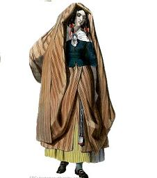
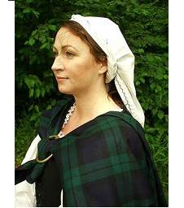

Followed by an imitation and two "modern" gathering songs to the same tune
Suivi d'une "imitation" et de deux chants "modernes" de rassemblement sur le même timbre
Sources of the text:
1° "Sar-Obair nam Bard Gaeleach", The Beauties of Gaelic Poetry
By John McKenzie, 5th edition 1882, Edinburgh (first published in 1841).
2° "Clarsach na h-Alba", no Orana Taghta Gaidhealach
"The Harp of Caledonia", a collection of popular Gaelic Songs
Glasgow, Robert McGregor, ca 1889.
"The chorus of this air and its name are well known to allude to the rising of the year 1715; but the bacchanalian song attached to it is in compliment to
Allan McDonald of Clanranald
, slyly instigating him and his followers to rise in what they called "the rightful cause".
It is extraordinary to find this little ancient air embraces the subject of two favourite Scots tunes, which seem to have been built upon it, viz. "O'er the Muir among the Heather" and "Peggy now the King 's come" -while the original, in the Highlands, is in as great request as ever."
(Simon Fraser: Note to song N°225)
"O'er the muir " was included with this tune by Burns in the Scots Musical Museum IV under #328 (1792) with a note attributing it to a certain Jean Glover born in 1758.
The first verse and chorus read thus:
Comin' through the craigs o' Kyle,
Amang the bonnie bloomin' heather,
There I met a bonnie lassie,
Keepin' a' her ewes thegither.
O'er the muir amang the heather
O'er the muir amang the heather,
There I met a bonnie lassie
Keepin' a' her ewes thegither.
Both lyrics and tune of the present ditty evidently inspired the minister's wife,
Mrs Norman McLeod Sr
, in the Victorian age, with her English song
"Sound the Pibroc'h"
relating to the '45, that has the same Gaelic chorus "Tha thig'n fodham!".
A propos de la mélodie
"Le refrain et le titre de cet air font allusion, comme on le sait, au soulèvement de 1715. Mais cette chanson à boire sert à faire l'éloge d'
Allan McDonald de Clanranald
, et l'inciter sournoisement, lui et son clan, à se rallier à ce qu'on appelait "la juste cause".
Il est curieux de constater que cette antique petite mélodie, serve à chanter deux des chansons les plus en vogue en Ecosse, à savoir, "Par landes et bruyères" et "Peggy, maintenant que le Roi est arrivé", tandis que l'original, dans les Highlands, est plus prisé que jamais."
"Par landes et bruyères" fut repris par Burns dans le "Musée musical écossais" IVème volume sous le N° 328 en 1792 avec une note l'attribuant à une certaine Jeanne Glover née en 1758.
La première strophe et le refrain s'énoncent ainsi:
Traversant les rochers de Kyle
Et la jolie bruyère en fleurs
J'ai rencontré une bergère
En train de garder son troupeau
Sur la lande dans la bruyère,
Sur la lande dans la bruyère,
J'ai rencontré une bergère
En train de garder son troupeau.
Le texte et la mélodie de la présente chanson ont, à l'évidence, inspiré à la femme de pasteur,
Mrs Norman McLeod
, à l'époque victorienne, son chant en anglais
"Sonnez le Pibroc'h"
relatif au soulèvement de 1745 mais qui conserve le refrain gaélique "Tha thig'n fodham!".
I AM INCLINED TO RISE [1]
by JOHN MCDOUGALL MCLEAN
dedicated to THE CAPTAIN OF CLANRANALD [2] [3]
CHORUS
O I feel surge, feel surge, feel surge,
O I feel surge, feel surge, feel surge,
O I feel surge the urge
Aye, the urge to rise!
1. Here's a toast that's well thought over:
The health of Alan of Moidart,
To drink this toast cheerfully:
Let's rise with sincerity!
O I...
2. Howe'er far from me you may be
T' would raise joy and spirit in me
Would a good news to me speed
Of the warrior of the great deeds
O I...

3. There is many a pretty maid
Who well becomes the arisaid [4]
All the way from Balivannich
To Barra Sound who for you longs.
O I...
4. With some in Eilean Bheagram,
Some in Italy, some in France
And there is no day of preaching
Without some in Kipheder...
O I...
5. When all those womenfolk gather
Wearing tight pulpit-shaped kertches [5]
There will be sweat upon their brows
When they dance on a deal floor. [6]
O I...
6. When the afternoon turns to dusk
The groomsmen will dance full of joy,
To the lilt of the Highland pipes
They will all sing in tuning.
O I...
7. You're for stormy days the helmsman
Who sails the seas and the ocean
You bring your ship to the harbour
With the arm strength of your warriors
O I...
8. Another thing worth mentioning
To the game hunter that you are:
With small calibre, don't forget
That the red flock is nimble [7].
O I...
9. There it was the hardy lion
When you unfurled your gonfalon
With red hand and salmon and ship
So that with pride your face was lit! [8]
O I...
[9]
Transl. Christian Souchon (c) 2015
THA TIGH 'N 'FODHAM EIRIDH [1]
LE IAIN MAC DHUGHAILL 'IC-LACHUINN.
DO THIGHEARNA CHLANN-RAONAILL [2] [3]
1. SID an t-slainte chùramach;
Olamaid gu sunndach i;
Deoch slaint'Ailein Mhuideartaich...
Mo dhùrachd dhut gun éirich.
Tha tig'n fodham, etc.
2. Ged a bhiodh tu fada bh'uam,
Dh-eireadh sunnt a's aigndeah orm;
'Nu'r chluinninn sgeul a b'aite leam,
Air gaisgeach nan gniomh euchdach.
Tha tig'n fodham, etc.
3.'S iomadh maighdeann bharrasach,
G'a math d'an tig an earrasaid, [4]
Eadar Baile-Mhanaich, agus
Caolas Bharradh 'n déigh ort.
Tha tig'n fodham, etc.
4. Tha pairt an Eilein Bheagram dhiubh,
'S cuid 's an Fhràing 's 'san Eadailt dhiu,
'S cha'n eil latha teagaisg nach
Bi'n Cille-Pheadair treud dhiù.
Tha tig'n fodham, etc.
5. 'Nuair chruinnicheadh am pannal ad,
Breid caol an caradh crannaig orra, [5]
Bidh falus air am malaichean
A' damhs' air urlar déile. [6]
Tha tig'n fodham, etc.
6. 'N uair chiaradh air an fheasgar,
Gum bu bheadarach do fhleasgaichean,
Bhiodh pioban mor 'gan spreigeadh ann,
A's feadanan 'g an gleusadh.
Tha tig'n fodham, etc.
7. Sgiobair ri la gaillinn thu
A sheoladh cuan nam maranan,
A bheireadh long gu calachan
Le spionnadh glac do threun-fhear.
Tha tig'n fodham, etc.
8. Sgeul beag eile a dhearbhadh leat,
Gur sealgair sithne 'n garbhlach thu,
Le d' chuilbheir caol, nach dearmadach,
Air dearg-ghreigh nan ceann eatrom. [8]
Tha tig'n fodham, etc.
9. B'e sid an leoghann aigeannach, -
'N uair nochdadh tu do bhaidealan
Lamh dhearg, 'us long, 'us bradanan,
'N uair 'lasadh meanm na d'eudainn. [8]
Tha tig'n fodham, etc.
[9]
TOUT ME PORTE A ME LEVER [1]
par JOHN McDOUGALL McLEAN
Dédié au CAPITAINE de CLANRANALD [2] [3]
REFRAIN
Tout me porte, tout me porte
Tout me porte, tout me porte
Tout me porte assurément
A me lever à présent!
1. Pour le toast que je te porte,
Alain de Moidart, j'exhorte
Tous tes amis à se lever!
Buvons, buvons à ta santé,
Tout me porte...
2. Bien que le sort nous éloigne
La joie emplirait mon âme,
Si des nouvelles parvenaient
De cet héroïque guerrier!
Tout me porte...
3. Ici tant de jolies filles
Vêtues des longues mantilles [4]
T'adorent depuis Baliva-
-Nich jusqu'au Sound de Barra.
Tout me porte...
4. A Eilean Bheagram, je pense,
En Italie, même en France.
A Kilphedir chaque jour
De prêche, on parle d'amour.
Tout me porte...

5. Qu'elles fassent une fête,
Fichus serrés sur leurs têtes, [5]
La sueur perlera sur leurs fronts
Lorsqu'elles danseront en rond! [6]
Tout me porte...
6. Dansant au son des musettes,
Clamant leurs chants à tue-tête,
Les garçons d'honneur, gais et fous,
Les suivront entre chien et loup!
Tout me porte...
7. Sur les rames les dos s'arquent:
Tu mènes au port la barque,
Pilote bravant les grands vents
Sur les mers et les océans.
Tout me porte...
8. Mais sois un chasseur modeste,
La harde rouge est fort preste [7]
Sur le rocailleux terrain.
Souviens-t-en, souviens-t-en bien!
Tout me porte...
9. Que le courageux Lion puisse
Si ta bannière tu hisses
La Main, le Saumon et l'Esquif
Ranimer ton orgueil furtif! [8]
Tout me porte...
[9]
Trad.. Christian Souchon (c) 2015
[1] This popular and cheerful song was composed on
the rising of Allan, the famous
Captain of Clanranald
, Ailean Dearg (Alan the Red), in
1715. He was slain at Sherrifmuir, and the bards vied
with one another in lamenting his death. Boswell, the
biographer of Johnson, boasted that he could sing one verse
of this ditty. He relates that "when Clanranald's servant
was found watching the body of his master the day after
the battle, one asked who that was ? the servant replied,
'he was a man yesterday.'" Boswell's Journal, p. 358. (Note from "Sar Obair").
[2] Dr Michael Newton of the University of Edinburgh writes in an article titled "Danns' air urlar deile thu" (1993): "A [...] nod towards French and continental connections appears in the well-known Jacobite anthem "Tha Tighinn Fodham Éirigh" composed
in 1715 by
Iain mac Dhùghaill 'ic Lachuinn
(as stated in the song collection "An t-Aillegan" compiled by Seumas Munro, before 1884, Edinburgh) for Ailean Dearg, the chief of
Clanranald, who lived in France for many years before
returning to Scotland. [...]
Here we see an example of Jacobite code talk where the
female suitors of Ailean Dearg are cyphers for Jacobite
warriors; these
plays on gender identity
were elaborated even
further in Jacobite poetry of the 1745 Jacobite Rising.[...]
Ailean is associated geographically with France, Italy, and Scottish Gaeldom, accurately delineating his life experiences and range of contacts, and the channels of influence that would have
brought French court dance practices to Highland contexts.
The poet plays with the associations of dance to represent a
range of potential meanings, but especially to make an
analogy between courtship of noble men and women, and the
campaigning of the chief for men to join the Jacobite cause."
Besides, the song resorts to metaphors borrowed from seafaring and hunting.
We may assume that Iain mac Dhùghaill 'ic Lachuinn was related to (if not identical with) John McLachlan, the composer of
the song upon the Birth of Prince Charles
(1720), since the McLachlans of Killbride were known as the best Gaelic scholars in their day.
[3]
Alan the Red (Ailean Dearg)
was the 13. chief of ClanRanald (1675 - 1715). He was mortally wounded at the battle of Sherrifmuir where he led the right wing of the Jacobite Army, which was held by Clan Donald since Bannockburn (1314). He had fought with Bonny Dundee at Killiecrankie (1689).
The chief's patronymic Mac Mhic Ailein (Alan's grandson), referring to the Chief of Clanranald, is in use since 1531.
Balivannich
is a village on Benbecula Island. The Clanranald stronghold,
Casteal Bheagram
, was still occupied in 1715 when it was replaced by
Boisdale
(here referred to as
Kilphedir
). It stood on an island in the Loch an Eilein, on South Uist which is set apart from Benbecula by the Sound of Barra. Clanranald was the owner of the larger part of South Uist, which has ensured that it has remained Roman Catholic.
[4]
Arisaid
("earrasaid", a place name): married woman's dress.
[5]
Kertch
("breid"): married woman's headdress (from kerchief).
[6] "A' danns' air
urlar deile
" They dance on the deal floor. It is, but for a word, the title of Dr Newton's article (www.irss.uoguelph.ca/article/viewFile/2319/3183).
[7]
Red flock
: the Red Coats.
[8]
Lion, red hand, salmon and ship
: are the four symbols on the coat of arms of the High Chief of Clan Donald (of which ClanRanald is a branch).
Alexander McDonald's "Birlinn Chlann Raghnaill" (The "Galley of Clanranald) is one of the most famous poems in Gaelic language.
[9]
Tha tighinn fodham eiridh
: "fodham" means "under me" and "tig" means "to come": "Tha tighin fodham" is an idiomatic phrase meaning "the urge (to do something) surges in me".
"Eiridh", a word whose utterance is delayed to coincide with the climax of the melodic rise, means both "to rise" and "to uprise".
The pastiche elaborated by Mrs Norman McLeod, in Victorian times, is related to the 1745 uprising. The Gaelic chorus "Tha tighin fodham..." is kept, but the last line replaced by an English sentence: "To rise and follow Charlie!". These last words have become so popular that the Scots songster Alan Reid titled a CD dedicated to the '45 "The Rise and Fall o' Charlie" replacing the Gaelic double-entendre "eiridh" with an English play on words: "Rise and follow" becomes "rise and fall o'".
On the other hand, the final line "Tha tighin fodham Theàrlaich" one may come across more than once, does not mean at all.
[1] Ce chant populaire et entraînant fut composé pour inciter Alain, le fameux
capitaine de Clanranald
(1675 -1715), à se joindre aux insurgés de 1715. C'est ce qu'il fit: il périt à Sherrifmuir et les bardes rivalisèrent pour pleurer sa perte. Boswell, chargé des biographies chez l'éditeur Johnson, était fier d"avoir pu mémoriser un couplet entier de ce chant. C'est lui qui raconte que "lorsqu'on trouva le domestique de Clanranald devant le cadavre de son maître, le lendemain de la bataille,
quelqu'un lui demanda qui c'était. Le domestique répondit: "Hier, c'était encore un humain". Boswell's Journal, p. 358. (Note tirée de "Sar Obair")
[2] Michael Newton qui enseigne à l'Université d'Edimbourg indique dans un article intitulé "Danns' air urlar deile thu" (1993): "On trouve une évocation discrète [...] des liens [des Jacobites] avec la France et le continent dans l'hymne bien connu "Tha Tighinn Fodham Éirigh", composé en 1715 par
John McDougall McLean
(selon le florilège "An t-Aillegan" de Seumas Munro, avant 1884, Edimbourg) à l'intention d'Alain le Roux, chef du Clanranald, qui passa en France plusieurs années avant de rentrer en Ecosse [...]
Ce chant est un spécimen de langage codé jacobite, où les soupirantes qui se morfondent dans l'attente d' Ailean Dearg sont les guerriers restés fidèles à Jacques; ces
interversions d'identité sexuelle
se retrouvent dans les poèmes relatifs au soulèvement de 1745 [...]"
"Alain est associé géographiquement à la France, l'Italie et l'Ecosse gaélique. La zone ainsi délimitée est exactement celle où il vécut et où il se fit des relations. Elle signale les voies par lesquelles les danses, telles qu'on les pratiquait à Versailles, parvinrent jusque dans les Highlands. Les poètes jouent avec les images associées à la danse et leur donnent une série de significations possibles. En l'occurrence, il assimile la cour que font les gentilshommes aux nobles dames au ralliement par un chef de clan de ses hommes à la cause jacobite."
Le chant utilise en outre des métaphores tirées de la navigation et de la chasse.
On peut supposer qu'il existe un lien de parenté, sinon d'identité, entre ce Iain mac Dhùghaill 'ic Lachuinn et le John McLachlan, qui composa
le chant sur la naissance du Prince Charles
(1720), car les McLachlan de Killbride étaient, en ce temps-là, réputés pour leur érudition en langue gaélique.
[3]
Alain le Roux (Ailean Dearg)
fut le 13ème chef de ClanRanald (1675 - 1715). Il fut mortellement blessé à la bataille de Sherrifmuir où il commandait l'aile droite de l'armée Jacobite, celle réservé au Clan Donald depuis Bannockburn en 1314. Il avait combattu avec Bonny Dundee à Killiecrankie (1689).
L'appellatif Mac Mhic Ailein (Petit-fils d'Alain) appliqué au chef de Clanranald est en usage depuis 1531.
Balivannich
est un village de l'île de Benbecula. La forteresse de Clanranald,
Casteal Bheagram
, fut habitée jusqu'en 1715, date à laquelle on lui préféra
Boisdale
(appelé ici
Kilphedir
). Elle se dressait sur un îlot du Loch an Eilein, dans l'île de South Uist qui est séparée de Benbecula par le Détroit de Barra. Clanranald était propriétaire de la majeure partie de South Uist. C'est pourquoi cette île est demeurée catholique.
[4]
Arisaid
("earrasaid") est un village et le nom d'un costume de femmes mariées.
[5]
Kertch
("breid"): sorte de fichu porté par les femmes mariées (de "couvre-chef").
[6] "A' danns' air
urlar deile
" (Ils dansent sur la piste en bois de pin) est presque identique au titre de l'article du Dr Newton's article (www.irss.uoguelph.ca/article/viewFile/2319/3183).
[7]
La harde rouge
: les Habits rouges.
[8]
Le lion, la main rouge, le saumon et la galère
: sont les 4 "meubles" du blason du Haut-Chef du Clan Donald dont ClanRanald est une branche.
Le poème d'Alexandre McDonald's "Birlinn Chlann Raghnaill" (La galère de Clanranald) est l'un des plus fameux en langue gaélique.
[9]
Tha tighinn fodham eiridh
: "fodham" signifie "sous moi" et "tig" signifie "venir": "Tha tighin fodham" est une expression toute faite qui signifie "Je sens monter en moi l'envie (de faire quelque chose)".
"Eiridh", mot sur lequel culmine la montée chromatique de la mélodie, signifie à la fois "se lever" et "se soulever".
Le pastiche concocté par Mrs Norman McLeod à l'époque victorienne se réfère au soulèvement de 1745. Il reprend le refrain gaélique "Tha tighin fodham..." en remplaçant le dernière ligne par un vers anglais: "To rise and follow Charlie!". Ce dernier est devenu si populaire que le chanteur écossais Alan Reid a intitulé un CD de chants Jacobites "The Rise and Fall o' Charlie" (l'Ascension et la chute de Charlie) substituant au jeu de mots gaélique sur "eiridh", un jeu de mots anglais: "Rise and follow" devenant "rise and fall o'".
En revanche, le vers final "Tha tighin fodham Theàrlaich" que l'on rencontre parfois, ne signifie rien du tout.
In
1816
the first volume of the
« Albyn’s Anthology »
(Alba=Scotland) was published, styled a «select collection of the melodies and vocal poetry peculiar to Scotland and the Isles hitherto unpublished».
It was edited by
Alexander Campbell
(1764-1824) who had made the arrangements of the traditional tunes. The «
lyricist
» (presumably the author of some texts) was a named
Walter Scott Esq!
.
The above Gaelic poem was followed by the present «
Imitation by a lady
»
which though sticking to the model does not translate it (not only because the "kerches" mentioned in the original are no "Cambric coifs", as stated at stanza 5, since "Cambric" usually means "Welsh"):
En
1816
paraissait le premier volume de l’
« Albyn’s Anthology »
(Alba=Ecosse), un « recueil choisi de mélodies et traditions orales propres à l’Ecosse et aux Hébrides, non publiées à ce jour ».
Alexander Campbell
(1764-1824) en était l’éditeur ainsi que l’arrangeur musical, tandis que le «
lyriciste
» (l’auteur de certains textes) n’était autre qu’un certain
Walter Scott
.
Le texte gaélique ci-dessus était suivi de cette «
Imitation by a lady
»
qui, tout en restant très proche de son modèle, n’en est pas la traduction (et pas seulement parce que les coiffures dont parle l’original ne sont pas, comme il est dit à la strophe 5, des « coiffes cambriques », ce dernier mot se rapportant normalement au Pays de Galles):
1. Come, here’s a pledge to young and old,
Who quaff the blood-red wine;
A health to Allan Muidyart bold,
The dearest love of mine.
Along, along, then haste along,
For here no more I’ll stay,
I’ll braid and bind my tresses long,
And o’er the hills away.
4. And when to old Kill-Phedar came,
Such troops of damsels gay,
Say, come they there for Allan’s fame?
Oe come they there to pray?
5. And when these dames of beauty fair
Were dancing in the hall,
On some were gems and jewels rare,
And cambric coifs and all.
7. When waves blow gurly off the land,
And near the bark may steer,
The grasp of Allan’s strong right hand
Compels her hence to veer.
Along...
1. Tous, jeunes et vieux j’exhorte:
Vidant la coupe, qu’on porte,
Alain de Moidart que j'ai-
me tant, un toast à ta santé!
Que tous rejoignent la file !
Demeurer est inutile !
Je tresse et noue mes cheveux
Longs, pour m’en aller, je le veux.
4. Quand d’alertes demoiselles
Submergeaient en kyrielles
Kilphédar, était-ce Alain
Qu’on honorait, ou le lieu saint ?
5. Lorsqu’elles dansaient, ces belles
Dames, pourquoi portaient-elles
Rubis, émaux et joyaux
Et bonnets de Cambrie si beaux ?
7. Quand l’ardeur du vent écarte
Des routes sûres la barque,
C’est la poigne de ta main
Qui redresse son cours, Alain
Que tous...
Beside referring to the chorus and four stanzas in « Tha tighin fodham » (here numbered in the same way as in the original), this text contains reminiscences from other songs :stanza 7 echoes the inspiring
« Mo run geal og »
, st. 5 (Q17), while the chorus hints at the song
« O’er the hills and far away »
(A46).
These lyrics are followed by a note possibly influenced by Walter Scott's views of the matter. Including it was apparently still relevant and advisable in 1816:
" The close and elegant imitation of this animating "luinneag" being in a measure different from the Gaelic original, the EDITOR has adapted to the Air a few stanzas from his MS. Collection of "Loyal Songs", as they were called by the Jacobites, or staunch adherents to the now extinct Royal Family of STUARTS.
It is needless to add, taht the immediate offspring of the true Jacobite families are at this moment the most zealous and loyal supporters of the illustrious house of BRUNSWICK."
Outre la référence au refrain et aux quatre strophes de « Tha tighin fodham » (dont on a consevé ici la numérotation de l’original), ce texte contient des réminiscences d’autres chants : la strophe 7 évoque le pathétique
« Mo run geal og »
, strophe 5 (Q17), tandis que le refrain rappelle le chant
« O’er the hills and far away »
(A46).
Ce texte est en outre, assorti d’une remarque peut-être inspirée par Walter Scott lui-même. Elle avait sans aucun doute encore son utilité en 1816 :
« La présente imitation, aussi fidèle qu’élégante, de cet entraînant « luinneag » (chant à reprendre en chœur) adoptant une métrique différente de l’original gaélique, l’EDITEUR a adapté à la mélodie quelques unes de ces strophes tirées de sa collection de manuscrits de « Chants Loyaux ». Ce terme était en usage ches les « Jacobites » ou partisans convaincus de la Famille Royale des STUARTS aujourd’hui éteinte.
Il va sans dire que les rejetons immédiats des authentiques familles Jacobites sont désormais les plus farouches et loyaux soutiens de l’illustre famille de BRUNSWICK.
»
The "Albyn Anthology" includes a second bacchanalian song with the same tune. It refers to the 1745 rising and it is an incitement to follow Prince Charles Stuart.
L’ « Albyn Anthology » propose un second chant de toast sur le même timbre. Il s’agit maintenant du soulèvement de 1745 et le texte est un appel à suivre le Prince Charles Stuart.
3° Rise and Follow Charlie
Debout et suivons Charles!
I’m inspir’d, inspir’d, and fir’d
I’m inspir’d, nay, fiercely fir’d
I’m all on fire with strong desire
To rise and follow CHARLIE!
1. Flush from France, that hot-land, sirs,
CHARLIE’s come to Scotland, sirs;
Push round the Quaich and bottle, and, sirs,
Quaff a health to CHARLIE!
Ha teen fo’am, fo’am, fo’am,
Ha teen fo’am, fo’am, fo’am,
Ha teen fo’am, fo’am, fo’am,
To rise and follow CHARLIE!
2. Highlandman and Lowlandman,
The princely youth will follow, man!
To beat the red-coats hollow, man,
Wha wadna rise wi’ CHARLIE?
Ha teen fo’am, fo’am, fo’am, etc.
3. Let burly WULL frae Flanders come,
Wi’ brazen trump and kettle-drum!
Bang up the bag-pipe! ‘tis our trum’!
Let’s trim the GERMAN rarely!
Ha teen fo’am, fo’am, fo’am, etc.
4. We fear nae foes nor foreign loons,
Wi hairy lips and pantaloons;
Nor Saxons stern, nor bluff dragoons,
Up! Up! And waur them fairly!
Ha teen fo’am, fo’am, fo’am, etc.
5. Ilk a loyal heart and leal,
Ye wha love auld Albyn’s weal,
Come, drive the rebel to the deil!
And do’t again for CHARLIE!
Ha teen fo’am, fo’am, fo’am, etc.
6. The tongue is an unruly thing,
Whence imps o’hell in words tak wing!
See JAMES the third and eight – The KING!
And – not forgettin’ CHARLIE!
Ha teen fo’am, fo’am, fo’am, etc.
Je me consume d’envie,
Dussé-je y laisser la vie,
De me mettre, O ma patrie,
Debout et suivre CHARLES!
1. Fuyez la France honnie!
Suivez CHARLES en Scotie!
Que tournent "quaith", eau de vie
A la santé de CHARLES!
Ha teen fo’am, fo’am, fo’am,
Ha teen fo’am, fo’am, fo’am,
Ha teen fo’am, fo’am, fo’am,
Debout et suivons CHARLES!
2. Les Hautes et Basses Terres,
Voient sa prestance princière,
- Redcoats, gare à vos derrières! -
Car tous ils suivent CHARLES!
Ha teen fo’am, fo’am, fo’am, etc.
3. Le gros WUL rentre de Flandres.
Ses clairons il fait entendre:
Mais notre sonneur peut rendre
Muet le GERMAIN, s’il parle...
Ha teen fo’am, fo’am, fo’am, etc.
4. Au diable, étrangers, hilotes,
Vos moustaches, vos culottes!
Que sur Saxons et despotes
Notre hargne déferle!
Ha teen fo’am, fo’am, fo’am, etc.
5. Tout cœur loyal qui désire
Servir Alba s’entend dire:
Pour que la faction expire,
Soutenez tous CHARLES!
Ha teen fo’am, fo’am, fo’am, etc.
6. « La langue, chose indomptable,
Donne des ailes au diable… »
Paroles fort remarquables
Du ROI Jacque(s) et de CHARLES!
Ha teen fo’am, fo’am, fo’am, etc.
Attached to these lyrics that teem with subtleties is a note about stanza 6:
«This was a sly way of drinking the health of the son of James VII, which the Jacobites never failed to do at convivial meetings, quoting Scripture at the same time, «But the tongue can no man tame; it is an unruly evil, full of deadly poison.». Vide the general epistle of
James
, chap. III, 8,
[
in King James' version
, also known as "KJV"]
.
The following extempore epigram by Dr DIROM, made when called upon to drink GEORGE the Second's health, at a loyal meeting at Manchester, is omitted in the last edition of his works, and is here given to show, that a correspondent spirit existed at that time among the English as well as the Scottish Jacobites.»
“Here's "God bless the King! God bless the Faith's Defender!
There can be no harm sure in
blessing
- the
Pretender:
But wo Pretender is, or who is
King
–
God bless us all! That’s quite another thing!
This other text - which we have every reason to ascribe to the «lyricist» Walter Scott, himself- abounds in
reminiscences from other Jacobite songs:
- the expletive
«man»
and
«sirs»
concluding the first three lines of stanzas 1 and 2 are a device found in several narratives of battles:
« Bothwell Brigs »
(A55),
« Killiecrankie »
(B06 and
B07
),
« Sheriffmuir »
(H15,
H20
); or the song «
Whigs of Fife
» (A05) which contains, furthermore, the word
«burly»
applied to « Wull » in stanza 3 of the song at hand, namely William Duke of Cumberland, called back from Flanders to combat his cousin ;
- the «
quaich
» and bottle are pushed round the table in stanza 1, comme like in the songs «
The Dram Shell
» (d09), «
Arouse ilk kilted clan!
» (K12), «
He’s been long o’ coming
» (K09) and a song in praise of the Gentle Lochiel, “
Oran do Loch Iall
” (W01) ;
- the
"bluff dragoons"
in stanza 3 are borrowed from the song "
Tranent Muir
" (N16);
- the incitement «
do’t again
» in stanza 5 points to the burden of «
Hey Tutti Tatti
» in the Scots Musical Museum (G14) ;
- expressions tantamount to«
Ilk a loyal heart
» in stanza 5 appear in the lyrics of «
The Whigs’ Glory
» (P03, « ilk loyal subject »), «
The Friends and Land I love
» (a12, « ilk loyal bonie lad »), «
The Jacobite Auld Lang Syne
» (W10, « ilk loyal clan ») ;
- and the sentence «
Up and waur them
» in stanza 4 is a leitmotiv occurring in all stanzas and the chorus of the
homonymous ditty
(H12) about the battle of Sheriffmuir.
The device consisting in including into a song information gathered from other historical sources, like the Jacobite custom of quoting from the
Epistle of James
, when drinking the health of "the King", thus hinting at which king they meant, is very much like
Walter Scott
, as is the
quotation of the Gaelic chorus
in the original language « Tha tighin fodham… ».
Both devices are resorted to in his poem (L12)«
Mackrimmon’s Lament
» to which the
Rev. Norman McLeod
is connected in a very dubious way: he claims to have published a song « Cha till Maccruimen » allegedly composed by the piper McCrimmon, which was in fact his own composition, derived from the English poem by … Walter Scott!
Now this minister's wife,
Agnes McLeod née Maxwell
, was the author of the Jacobite song «
Sound the Pibroch
» (M33), on the same subject matter as « Rise and Follow Charlie », namely the 1745 uprising.
It shares with the present song the said motto in variations occurring as the conclusion of each stanza, always ending with the word «
Charlie
», whereas the other three lines end, like here, with the same rhyme. They also have in common the stanza in Gaelic language used as a chorus. This poem whose vehicle is a nearly identical melody arranged by the musician Malcolm Lawson, was printed many years later (1884) by her grand-daughter Annie Campbell McLeod Wilson and an Englishman, Sir Harold Boulton, in the collection «
Songs of the North
», p.168-169, which does not hint in any manner at the pre-existing « Rise and follow Charlie »!
Ce texte plein de subtilités est assorti d’une note à propos de la strophe 6 :
«Une façon ingénieuse de porter un toast crypté au fils de Jacques VII, ce que les Jacobites ne manquaient jamais de faire lors de leurs réunions, était de citer les Ecritures : « La langue, nul homme ne peut la dompter. Mal irréductible, elle est remplie d’un venin mortel ». Ce passage est tiré de l’Epitre de
Jacques
, chap. III, verset 8,
[
dans la traduction du roi Jacques
(Ier), dite « KJV »]
.
L’épigramme qui suit a été improvisée par le Dr DIROM, invité à porter un toast au roi Georges II, lors d’une réunion de soutien à celui-ci, organisée à Manchester. Elle est absente de la dernière édition de ses œuvres et elle est citée ici pour montrer qu’une même tournure d’esprit se rencontrait à l’époque chez tous les Jacobites, qu’ils fussent anglais ou écossais : »
“Dieu bénisse le Roi, Défenseur de la Foi!"
Dieu veuille en même temps---
bénir
le
Prétendant:
Qui donc est Prétendant, et qui donc est le Roi?
Dieu merci! Nous en parlerons une autre fois!"
Cet autre texte - que l’on peut raisonnablement attribuer au « lyriciste » Walter Scott. lui-même - fourmille de
réminiscences d’autres chants Jacobites:
- les
«man»
et les
«sirs»
qui terminent les 3 premiers vers des strophes 1 et 2 sont un procédé que l’on retrouve dans plusieurs récits de batailles :
« Bothwell Brigs »
(A55),
« Killiecrankie »
(B06 et
B07
),
« Sheriffmuir »
(H15,
H20
) ; ou le chant «
Whigs of Fife
» (A05) où apparaît en outre le mot
«burly»
(volumineux) qui qualifie « Wull » à la strophe 3 de notre chant, à savoir le Duc William de Cumberland, rappelé de Flandres pour combattre son cousin ;
- le taste-vin écossais appelé «
quaich
» de la 1ère strophe circule de main en main, accompagné de la bouteille, comme dans «
The Dram Shell
» (d09), «
Arouse ilk kilted clan!
» (K12), «
He’s been long o’ coming
» (K09) et un chant à la gloire du Gentilhomme Lochiel, “
Oran do Loch Iall
” (W01) ;
- les
"bluff dragoons"
(dragons matamores) du 3ème couplet proviennent du chant "
Tranent Muir
" (N16);
- le «
do’t again
» de la strophe 5 renvoie au refrain du «
Hey Tutti Tatti
» du Musée Musical Ecossais (G14) ;
- des expressions qui rappellent le «
Ilk a loyal heart
» (chaque cœur loyal) de la strophe 5 se rencontrent dans les chants «
The Whigs’ Glory
» (P03, « ilk loyal subject »), «
The Friends and Land I love
» (a12, « ilk loyal bonie lad »), «
The Jacobite Auld Lang Syne
» (W10, « ilk loyal clan ») ;
- enfin le «
Up and waur them
» de la strophe 4 revient comme un leitmotiv dans toutes les strophes et le refrain du
chant du même nom
(H12) qui relate la bataille de Sheriffmuir.
L'artifice qui consiste à introduire dans un chant des éléments connus par d’autres documents, comme cette citation de l’
Epitre de Saint Jacques
, qui accompagne un toast que l’on porte « au roi », pour indiquer à quel roi l’on pense, est tout à fait dans la manière de
Walter Scott
, tout comme la
citation du refrain gaélique
de l’air d’origine « Tha tighin fodham… ».
On voit les deux procédés à l’œuvre dans son poème (L12)«
Mackrimmon’s Lament
» à propos duquel on découvre le rôle trouble joué par le
Rév. Norman McLeod
, censé avoir transcrit le chant traditionnel « Cha till Maccruimen », alors qu’il en est en réalité l’auteur, un auteur qui, de plus, démarque un poème original anglais de… Walter Scott!
Or, l’épouse de ce pasteur,
Agnes McLeod née Maxwell
, est l’auteur du chant «
Sound the Pibroch
» (M33), dont le sujet est proche du présent « Rise and Follow Charlie », à savoir le soulèvement de 1745.
Il partage avec lui, non seulement ladite formule déclinée à la fin de chaque strophe qui se termine toujours par le mot «
Charlie
», les trois autres vers ayant, comme ici, une rime identique, mais aussi le couplet en gaélique utilisé comme refrain. Ce poème qui utilise une mélodie presque identique, arrangée par le musicien Malcolm Lawson, fut publié bien plus tard (1884) par sa petite-fille Annie Campbell McLeod Wilson et l’Anglais Sir Harold Boulton, dans le recueil «
Songs of the North
», p.168-169.
L’existence du présent « Rise and follow Charlie » n’y est pas signalée!
James Hogg gives a "modern" Jacobite version of "O'er the muir amang the heather" relating to the 1745 rising.
James Hogg donne une version Jacobite "moderne" de "Par landes et bruyères" se rapportant au soulèvement de 1745.
1. On by moss and mountain green,
Let's buckle a', and on the-gither,
Down the burn, and thro' the dean,
And leave the muir amang the heather.
Owre the muir amang the heather,
Owre the muir amang the heather,
Whae'er flee, it winna be
The lads frae 'mang the hills o' heather.
2. Sound the trumpet, blaw the horn,
Let ilka kilted clansman gather,
We maun up an' ride the morn,
An' leave the muir amang the heather.
Owre the muir, &c.
3. Young Charlie's sword is by his side,
Come weel, come woe, it maksna whether,
We'll follow him whate'er betide,
An' leave the muir amang the heather.
Owre the muir, &c.
4. Fareweel my native valley; thee
I'll never leave for ony ither;
But Charlie king of Scots maun be,
Or I lie low amang the heather.
Owre the muir, &c.
5. Fareweel a while, my auld cot-house.
When I come hame I'll big anither,
An' wow but we will be right crouse
When Charlie rules our hills o' heather.
Owre the muir, &c.
6. Hark! the bagpipe sounds amain,
Gather, ilka leal man, gather,
These mountains a' are Charlie's ain,
These green-swaird dells, an' muirs o' heather.
Owre the muir amang the heather,
Owre the muir amang the heather,
Wha wadna fight for Charlie's right,
To gie him back his hills o' heather!
PAR LANDES ET BRUYERES
Moderne
1. Mousses et vertes montagnes!
Avec l'épée pour compagne,
Suivant le ru, le vallon,
Quittons landes et fagnes!
Fils des bruyères, des landes,
Fils des bruyères, des landes,
Tous ferons notre devoir.
Bruyères et landes!
2. Trompes et cors nous appellent:
Debout les clans, tous en selle!
Courez au rassemblement!
Adieu, landes si belles!
Fils des bruyères, des landes...
3. Vois l'épée que Charles porte!
Bonheur ou malheur qu'importe!
Où qu'il aille, suivons-le
Par la lande, en cohortes!
Fils des bruyères, des landes...
4. Adieu ma vallée natale!
Cette heure est triste et fatale!
Mais l'Ecosse veut son roi:
La lande le réclame !
Fils des bruyères, des landes...
5. Ma ferme, il te faut m'attendre.
Pour te rebâtir plus grande,
D'ici peu je reviendrai,
Quand Charles aura ces landes.
Fils des bruyères, des landes
6. Entendez la cornemuse!
Que nul en chemin ne muse!
Rendons à Charles ces monts!
Aux lâches point d'excuse!
Oui, ces bruyères, ces landes
Oui, ces bruyères, ces landes.
Charles, sont tiennes de droit.
Il faut qu'on te les rende!
Traduction Ch; Souchon (c) 2010
When the last Stuart Monarch in the Protestant succession, Queen Anne, died in 1714, her successor was the Hanoverian King George I. In Britain, and especially in the Highlands of Scotland, this German Prince who spoke little English was exposed to acute
criticism and antipathy
.
James Francis Stuart
, the "Old Pretender", also known as the
"Chevalier de Saint Georges"
, considered by his supporters as the rightful King James III, then in exile in France, thought the time come for another Jacobite uprising. He called on the Chief of Clan Erskine, the rancorous Earl of Mar, nicknamed Bobbin' John, to raise the clans. The latter summoned several clan leaders to a
"hunting party"
on 27 August 1715. After the so-called
"Highland Quorum"
had met to plan the details of the enterprise, on the 6th of September he raised the old Scottish Standard, proclaiming James as the "lawful sovereign". The
gold ball fell off
the top of the flagpole, an incident that was to prove of ill omen. As a part of his efforts to rally numerous Highland clans, several songs were written, of which some are included here.
The
largest Jacobite army
ever (8,000, later 12,000) was raised and captured Perth on 14th September. Opposing Mar's further passage into Lowland Scotland were
2,000 of King George's troops
, under the command of the Chief of Clan Campbell, the
Duke of Argyll
, who held the Stirling plain. Mar kept his forces in Perth, waiting for reinforcements of Northern clans under the Earl of Seaforth to come. But Seaforth was delayed by the resistance of Hanoverian clans.
In October a rising in the north of England was started by a Northumberland squire Thomas Forster whose 300 horsemen joined another rising under
Lord Kenmure
and
Lord Derwentwater
.
Mar sent a Jacobite force under
Brigadier Mackintosh of Borlum
to join them. They seized Leith citadel but were chased away by the arrival of Argyll's forces. They then made their way south and met their allies at Kelso in the Scottish Borders on 22 October but could not unite on a common plan of action. Eventually they marched into England where they were met by hostile militia. Nevertheless they captured Lancaster and found about 1,500 recruits, bringing their force to around 4,000. Then Hanoverian forces (including the
Cameronians"
) arrived to besiege them at Preston, and they must surrendered on 14 November 1715.
At the same time, in Scotland, the
battle of Sherrifmuir
took place on 13 November 1715, between Mar's forces and a smaller force led by Argyll, whom they were unable to defeat. The middle and right flanks of the Jacobites were commanded by
McDonald of Clanranald
,
McDonnell of Glengarry
and McLean of Duart, who charged their men into Argyll's left flank led by Whetham’s in an attack that put their adversaries to rout. But Mar's left flank being also defeated, he retreated to Perth, instead of finishing off Argyll. On 22 December 1715, the Old Pretender landed at Peterhead and set court at Scone but his councillors advised him to abandon his attempt and a retreat to the coast was ordered. He boarded a ship at Montrose and went back to France on 4 February 1716.
Measures were taken for the
punishment
of the prisoners and those implicated in the rising who had not, like the
Marquess of Huntly
, defected to the Hanoverians or
fled abroad
. Many of the prisoners were sentenced to death and hundreds were sent to the plantations. Several persons of rank like
Kenmure
and Derwentwater were executed, while others, like the
Earl of Nithdale
made their escape from prison. The estates of over 40 families in Scotland were forfeited to the Crown.
To help the army move around and keep in check new insurrections, an Irish
General, George Wade
was entrusted with constructing a network of roads, bridges and forts across the Highlands.
A new
"little" rising
supported by Spain was, in spite of the great enthusiasm it generated, easily averted by the Hanoverians led by General Wightman in 1719.
Lorsque le dernier Stuart protestant s'éteignit en 1714, ce fut l'électeur de Hanovre qui devint roi sous le nom de George I. En Grande Bretagne et particulièrement dans les Highlands, ce prince allemand qui connaissait très peu d'anglais fut en butte
à bien des critiques
.
Jacques François Stuart
, le "Vieux Prétendant", également appelé le
"Chevalier de Saint Georges"
, en qui ses partisans voyaient le roi légitime Jacques III, exilé en France, jugea que le temps était venu pour un nouveau soulèvement Jacobite. Il chargea le chef du clan Erskine, le Comte de Mar dépité d'avoir été congédié, de rallier les clans à sa cause. Celui-ci invita plusieurs chefs à une
partie de chasse
le 27 août 1715. Après le
"Highland Quorum"
chargé de mettre au point les détails de l'opération, il leva l'étendard de l'Ecosse, le 6 septembre et proclama Jacques légitime souverain. Le
globe doré
fixé à l'extrémité de la hampe se détacha, ce qui allait se révéler de très mauvais augure. Dans le cadre de ces efforts de propagande, des chants furent composés dont certains figurent dans cette collection.
La plus grande
armée Jacobite
jamais réunie (jusqu'à 12.000 hommes) s'empara de Perth le 14 septembre. Pour lui barrer la route des Lowlands une armée de
2.000 hommes
commandée par le chef du clan Campbell, le
Duc d'Argyll
fut dépêchée dans la plaine de Stirling. Mar retint son armée à Perth, dans l'attente des clans du nord commandés par le Duc de Seaforth. Mais ils furent retardés par des clans gagnés à la cause hanovrienne.
En octobre le Northumberland se souleva à l'instigation d'un parlementaire, Thomas Forster, dont les 300 cavaliers se joignirent à un autre mouvement animé par
Lord Kenmure
et
Lord Derwentwater
. Mar envoya un détachement commandé par le
Brigadier Mackintosh de Borlum
leur porter assistance. Il prit Leith mais en fut bientôt chassé par les troupes d'Argyll. Il se dirigea alors vers le sud et rejoignit ses alliés à Kelso le 22 octobre. Les alliés hésitèrent d'abord sur un plan d'action commun. Finalement ils entrèrent en Angleterre où ils se heurtèrent à l'hostilité des milices locales. Ils n'en parvinrent pas moins à prendre Lancastre et à recruter 1.500 soldats portant leurs effectifs à 4.000. C'est alors que les Hanovriens (dont les fameux
"Caméroniens"
) arrivèrent et les enfermèrent à Preston. Les assiégés se rendirent le 14 novembre 1715.
Au même moment avait lieu en Ecosse la
bataille de Sherrifmuir
, le 13 novembre 1715, entre les forces de Mar et celles, bien moins nombreuses, d'Argyll qu'elles furent incapables de vaincre. Le centre et le flanc droit de l'armée Jacobite étaient commandés par
McDonald de Clanranald
,
McDonnell de Glengarry
et McLean de Duart, qui lancèrent leurs hommes contre le flanc gauche d'Argyll, commandé par Wetham qu'ils mirent en déroute. Mais comme son propre flanc gauche était enfoncé, Mar se retira vers Perth au lieu d'exploiter son avantage. Le 22 décembre, le Vieux Prétendant débarqua à Peterhead et organisa une réception à Scone. Mais ses conseillers l'invitèrent à abandonner la partie et ordre fut donné de faire retraite vers la côte. Il s'embarqua à Montrose et repartit pour la France le 4 février 1716.
De
sévères châtiments
furent infligés aux prisonniers et à ceux qui, impliqués dans l'insurrection, n'avaient pas, comme
le Marquis de Huntly
, changé de camp ou
fui à l'étranger
. Beaucoup furent conamnés à mort ou déportés dans les plantations aux Antilles. Plusieurs gentilshommes furent exécutés comme
Kenmure
et Derwentwater. D'autres, comme le
Comte de Nithsdale
parvinrent à s'évader de prison. Les terres de plus de 40 familles nobles écossaises furent confisquées au profit de la Couronne.
Pour aider l'armée dans ses mouvements et lui permettre de tenir en échec de nouvelles insurrections, un général irlandais,
Georges Wade
, fut chargé de construire un réseau de routes, ponts et forteresses pour contrôler les Highlands.
Un nouveau
"petit" soulèvement
, soutenu par l'Espagne, eut lieu en 1719 et fut, en dépit du formidable enthousiasme qu'il suscita, facilement réprimé par l'armée hanovrienne commandée par le Général Wightman.